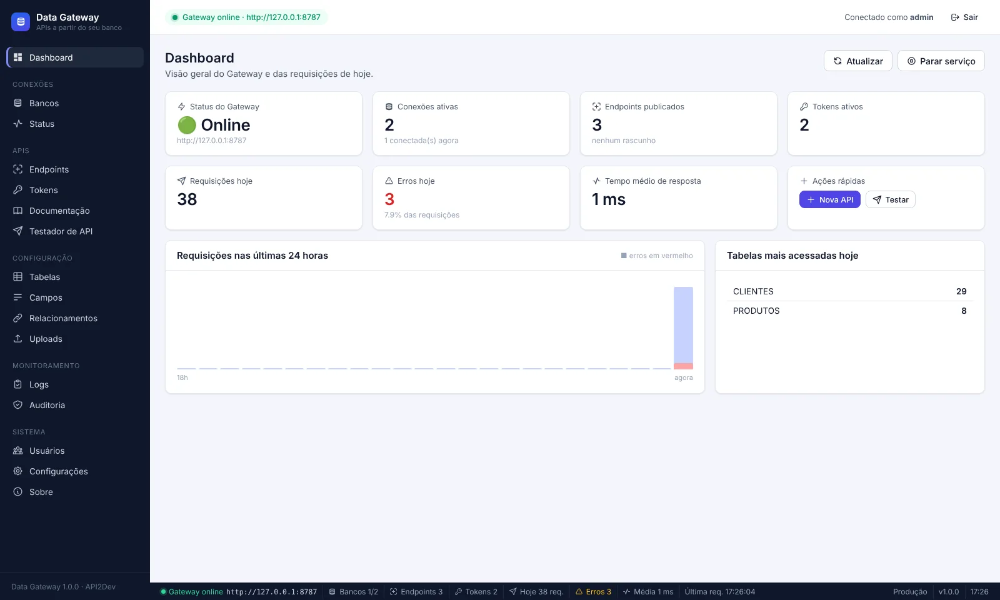

Aplicativos mobile e web
Flutter, React Native, Android, iOS, React ou Angular acessando clientes, produtos e pedidos do ERP sem um back-end novo.
O Data Gateway é um aplicativo para Windows que se conecta ao banco que você já usa e publica APIs seguras, com tokens, permissões, filtros, paginação, consultas SQL, documentação Swagger, logs e auditoria. Tudo configurado em telas — sem mexer no sistema que já está rodando.

Quem consome a API nunca acessa o banco diretamente: só enxerga as tabelas, os campos e as operações que você liberou. O Data Gateway recebe a requisição, confere o token e as permissões, monta o SQL parametrizado e devolve JSON.
Servidor, porta, banco, usuário e senha. Teste na hora. A senha fica protegida pelo Windows (DPAPI).
O sistema lê tabelas, colunas, chaves e relacionamentos e sugere a configuração de cada campo.
Um token por sistema ou cliente, com permissão por endpoint e por operação.
Em qualquer linguagem. Teste no próprio app, veja o Swagger gerado e acompanhe os logs.
Sempre que um sistema precisa conversar com um banco que já existe — sem reescrever o sistema e sem abrir o banco para a internet.
Flutter, React Native, Android, iOS, React ou Angular acessando clientes, produtos e pedidos do ERP sem um back-end novo.
Sistemas em Delphi com Firebird, VB6, Clipper ou Access passam a falar REST/JSON com e-commerce, marketplaces e parceiros.
Power BI, Excel (Power Query), Google Sheets e dashboards lendo dados por API, com usuário somente-leitura.
Fluxos que enviam mensagens, geram cobranças, sincronizam cadastros e disparam rotinas por HTTP.
Publique só o necessário — 2ª via, pedidos, status de serviço — com tokens exclusivos para o portal.
SELECTs com JOINs, agrupamentos e totais, montados no editor ou no diagrama visual e publicados como GET.
O ERP em Delphi continua funcionando do jeito que está. O Data Gateway lê o mesmo banco Firebird e publica APIs para o app de vendas, o e-commerce, o Power BI ou o portal do cliente.
fbclient.dllNONE/WIN1252 (detecção automática)CHAR(1) “S”/“N” viram true/false no JSONListar, buscar por ID, incluir, alterar (PUT/PATCH) e excluir (física ou lógica), cada operação liberada individualmente.
Igual, diferente, maior/menor, contém, começa com, termina com, em lista e nulo — só nos campos permitidos.
Página e tamanho com limite máximo por endpoint, total de registros e total de páginas.
Dados relacionados na mesma resposta com ?expand=, a partir das chaves estrangeiras.
Editor SQL e montador visual em diagrama; teste com parâmetros e publique como GET somente leitura.
Token por sistema, validade, permissões por endpoint e operação. Guardados apenas como hash.
Anexos por registro com extensões permitidas, limite de tamanho e nomes seguros.
Documentação OpenAPI 3 gerada a partir da configuração, sempre atualizada.
Monte a requisição e veja status, tempo e JSON sem sair do aplicativo.
Requisições, tempos e erros; auditoria de login, configuração, tokens e alterações de dados.
Exporte tudo em um arquivo e restaure em outro computador.
Inicia com o Windows e mantém a API no ar em segundo plano.
Do primeiro acesso à API publicada na internet. Clique em cada etapa.
http://localhost:8787. O indicador verde no topo e a barra de status mostram se ele está no ar.Dica: instale no mesmo servidor do banco ou em uma máquina da mesma rede — assim o banco não precisa ficar exposto.
.FDB como o servidor enxerga (ex.: C:\Sistema\Dados\SISTEMA.FDB) ou o alias.Para relatórios e consultas, prefira um usuário de banco somente leitura.
clientes → /api/v1/clientes.nome contém, cidade igual).O SQL é gerado automaticamente e sempre parametrizado — nada do que chega na requisição vira texto SQL.
Authorization: Bearer <token> — nunca na URL.Token vazou? Revogue e gere outro em segundos, sem afetar os demais sistemas.
/docs) ou baixe o openapi.json para entregar a quem vai integrar.O Swagger é gerado da configuração: mudou um campo ou filtro, a documentação já está atualizada.
:codigo ou :desde, informe o tipo e um valor de teste.GET /api/v1/consultas/<endereço>.Só SELECT/WITH são aceitos, em transação somente leitura — o banco recusa qualquer escrita.
http://IP-DO-SERVIDOR:8787/api/v1/….api.suaempresa.com.br).Nunca exponha a porta do banco de dados na internet — exponha apenas o Data Gateway, com HTTPS.
Todas as rotas ficam em /api/v1, recebem e devolvem JSON e exigem o cabeçalho Authorization: Bearer <token>.
| Operação | Rota |
|---|---|
| Listar (paginado) | GET /api/v1/{endpoint} |
| Buscar por ID | GET /api/v1/{endpoint}/{id} |
| Incluir | POST /api/v1/{endpoint} |
| Alterar tudo / parte | PUT · PATCH /api/v1/{endpoint}/{id} |
| Excluir | DELETE /api/v1/{endpoint}/{id} |
| Enviar arquivos | POST /api/v1/{endpoint}/{id}/arquivos |
| Consulta SQL publicada | GET /api/v1/consultas/{endereço} |
| Documentação | GET /docs · /openapi.json |
page, pageSize | Página e quantidade por página (até o máximo do endpoint). |
sort, direction | Campo de ordenação e asc/desc. |
expand | Inclui dados relacionados (ex.: ?expand=itens). |
| filtros | Os nomes configurados no endpoint (ex.: ?nome=silva&cidade=Goiânia). Parâmetros desconhecidos são recusados. |
# Clientes de Goiânia, 20 por página, ordenados pelo nome
curl -G "http://localhost:8787/api/v1/clientes" \
--data-urlencode "cidade=Goiânia" -d sort=nome -d pageSize=20 \
-H "Authorization: Bearer SEU_TOKEN"
# Incluir um cliente
curl -X POST "http://localhost:8787/api/v1/clientes" \
-H "Authorization: Bearer SEU_TOKEN" \
-H "Content-Type: application/json" \
-d '{"nome":"Maria Silva","cidade":"Goiânia"}'const resp = await fetch('http://localhost:8787/api/v1/pedidos/1520?expand=itens', {
headers: { Authorization: 'Bearer ' + token }
});
const { success, data, error } = await resp.json();
if (!success) console.error(error.code, error.message);
else console.log(data.cliente, data.itens.length);uses System.Net.HttpClient, System.JSON;
var
Http: THTTPClient;
Resp: IHTTPResponse;
begin
Http := THTTPClient.Create;
try
Http.CustomHeaders['Authorization'] := 'Bearer ' + Token;
Resp := Http.Get('http://servidor:8787/api/v1/clientes?pageSize=50');
if Resp.StatusCode = 200 then
Memo1.Text := Resp.ContentAsString(TEncoding.UTF8);
finally
Http.Free;
end;
end;// 200 OK — listagem
{
"success": true,
"data": [ { "codigo": 1, "nome": "José da Conceição" } ],
"pagination": { "page": 1, "pageSize": 20, "total": 134, "totalPages": 7 }
}
// 400 — erro padronizado (sem detalhes internos do banco)
{
"success": false,
"error": {
"code": "VALIDATION_ERROR",
"message": "Parâmetro não permitido: idade.",
"details": [ … ]
}
}O Data Gateway não executa SQL enviado por quem chama a API. Tabelas, campos, filtros e ordenações vêm de uma lista autorizada e todo valor recebido vira parâmetro.
Authorization: BearerClique para ampliar. Use as setas (ou deslize no celular) para navegar.
Não para publicar a API: tudo é feito em telas. Para consumir a API, use a ferramenta de sua preferência (app, site, Power BI, n8n…). Conhecer SQL ajuda apenas no recurso opcional de Consultas SQL.
Microsoft SQL Server, PostgreSQL, MySQL, MariaDB, Firebird (2.5 a 5.0) e SQLite. É possível ter várias conexões ao mesmo tempo, inclusive de tipos diferentes.
Não. O Data Gateway roda no seu computador ou servidor e conversa diretamente com o seu banco. As configurações ficam em um banco SQLite local, em %APPDATA%\Data Gateway.
Não. Ele só lê a estrutura (tabelas, colunas, chaves) e executa as operações de dados que você liberar em cada endpoint. Nenhuma tabela é criada ou alterada no seu banco.
Sim. Firebird 2.5, 3.0, 4.0 e 5.0, dialeto 1 e 3, inclusive bancos com charset NONE/WIN1252. Informe o servidor, a porta 3050 e o caminho do arquivo .FDB. Não é preciso instalar o fbclient.dll.
Coloque um proxy reverso com HTTPS (Caddy, Nginx ou IIS) apontando para a porta do Data Gateway (padrão 8787) e use um domínio. Não exponha a porta do banco de dados.
Ele fica na bandeja do Windows e pode iniciar junto com o sistema. Com a opção de minimizar para a bandeja ativa, fechar a janela não derruba a API; para encerrar, use Sair no ícone da bandeja.
Instale a versão nova por cima — as configurações são mantidas. Na versão portátil, basta substituir o executável. Recomenda-se exportar um backup antes (Sistema → Configurações).
Sim. Os executáveis são compilados a partir do código aberto no GitHub e assinados. Free code signing provided by SignPath.io, certificate by SignPath Foundation — veja a Code signing policy. Nas primeiras semanas de uma versão nova, o SmartScreen ainda pode exibir um aviso; clique em Mais informações → Executar assim mesmo.
Desenvolvido por Hendell Alves Cardoso — API2Dev. Fale com a gente para tirar dúvidas, receber o instalador, integrar seus sistemas ou publicar a API na internet.